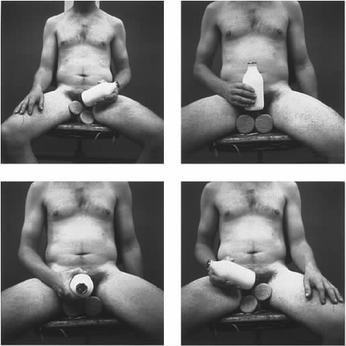

每个人都对达达和超现实主义有所了解。达达起源于1916年，一直延续到20世纪20年代初期才结束。作为一种国际化的艺术运动，达达旨在颠覆传统的资产阶级艺术观念，通常是一种公然挑衅的反叛艺术。别的不说，当第一次世界大战在欧洲爆发时，它的参与者，如马塞尔·杜尚、弗朗西斯·皮卡比亚、特里斯坦·查拉、汉斯·阿尔普、库尔特·舒维特和劳乌尔·豪斯曼等人用他们对似是而非和傲慢鲁莽举止的热爱来与这个疯狂失常的世界抗衡。
超现实主义作为达达艺术上的后继者，于1924年正式诞生。它于20世纪40年代后期消亡时实际上已成为一种全球化的运动。马克斯·恩斯特、萨尔瓦多·达利、胡安·米罗和安德烈·马松等超现实主义艺术家坚信，人的本性基本上是非理性的，因而他们对精神分析有着混乱而难以控制的喜爱之情，力求探索人类心灵的神秘之处。
对很多人来说，达达和超现实主义与20世纪艺术史中的诸多运动区别不大，只不过是“现代艺术”的化身。达达被看作是对传统的批评和反抗；超现实主义虽然同样在精神上反资产阶级，却更沉迷于光怪陆离的事物之中。然而为何是达达“和”超现实主义？为何把它们放在一起？它们是两项运动，但经常被混为一谈。一直以来，艺术史家发现达达为超现实主义“铺平了道路”这一笼统的概括非常好用，然而实际情况却是这只适用于达达运动的一个地点，即巴黎。本书当然要重述这段历史，但也会把它们当成是两场明显不同的运动来加以呈现，以便二者可以相互抗衡。比如说达达沉迷于现代生活的混乱和破碎之中，而超现实主义更多地是以修复为己任，试图创造一个新的神话，让现代男女重新接触到无意识的力量。这二者之间的差异涉及一些重要区别，这些区别正是我打算尽可能生动地表述出来的。
总的来说，达达和超现实主义比上世纪的其他任何运动更为深入地渗透到了我们的文化之中，尤其是超现实主义已经进入到我们的日常语言之中：我们会谈论某部电影的“超现实幽默”或“超现实情节”。正是这种延续性意味着我们很难把它置于远离我们的“历史”之中。不可否认，有关这两场运动的评论和历史描述已越来越详尽。曾被认为是反学术的达达如今在大学里被广为研究。同样，有关达利和勒内·马格里特等臭名昭著的超现实主义艺术家的研究专著现在也屡见不鲜。但是，通常过剩的信息令人眼花缭乱，因而使我们失去了批评的距离。
我意识到了这一问题，于是围绕主要专题构建本书的结构。第一章记载达达和超现实主义的发展历程，讨论同时研究二者的种种假设。第二章详细审视这两场运动各自传播思想的方式，尤其是从公共事件和出版物方面来加以思考；在此过程中展示它们如何构建了艺术与生活的对话。第三章仔细研究美学问题，重点关注诗歌、拼贴、照片蒙太奇、绘画、摄影、现成品和电影。反艺术以及这两场运动在现代派美学辩论中的定位在此肯定是重要的问题。最后两章结合当下评论这两场运动的历史观点，突出反映我和他人近年来的研究成果。我在集中研究它们的政治之前，考察了达达和超现实主义对于非理性主义和性欲等一系列重要议题的态度。本书结尾反思了这两场运动的影响，尤其思考了它们与新近艺术之间的关系。
我主要关心的一直是向达达和超现实主义提出的疑问，这些问题与我们目前的文化思虑一致。例如，身份问题——不管是种族的还是性欲的都是我们许多人以及超现实主义艺术家关注的焦点。例如，法国摄影师克劳德·卡恩和古巴画家韦尔弗雷多·兰姆就率先设法回答这个问题。但是要想理解他们此种关切的力量所在，就必须再次创造出让他们做出此种反应的背景。同样，考虑到目前超现实主义在整个文化中的普及程度（譬如达利的作品在海报中随处可见），我们可以安全地假设，达达和超现实主义所称颂的“黑暗的一面”，即我们心灵生活中的无意识的部分，现在被广泛地认为是“积极”的事情。然而，在法西斯主义曾经十分强大的文化中，很多人可能会怀疑陷入非理性到底有没有好处。不过现代派批评家则反驳说，无论达达主义者和超现实主义者曾认为他们是多么反资产阶级，他们只是在帮着扩展能被资产阶级文化同化进价值体系的经验范围。在我们的“后现代”文化里，我们太轻而易举就把自己黑暗的动机和冲动审美化了。本书审视这些态度的多种历史渊源，澄清为何以及在何种背景下它们曾是“激进”的。在这一过程中，我们会不可避免地怀疑自身的动机。

图1 莎拉·卢卡斯，《下马饮奶》，组图，1994年。
此种探询并不一定意味着对达达和超现实主义的盲目崇拜，而是试图证实它们为何在我们的文化中仍然是如此重要的力量。考虑到当代艺术依然深受这些运动的影响，这种探询就显得尤为迫切。只要瞥一眼20世纪90年代英国最引人注目的艺术家之一莎拉·卢卡斯的作品，这一点就显而易见了。
卢卡斯的作品展示了一组让人大吃一惊的欲望，而这曾是达达的一贯作风。与此同时，她采用了一度在超现实主义中流行的身体形象的替代或移位。她的作品间接依赖马塞尔·杜尚、曼·雷、勒内·马格里特等达达主义者和超现实主义者所取得的成就。但卢卡斯的作品是仅仅证实了达达式的震惊已经令人习以为常了，还是在文化上以一种非常重要的方式强化了此项传统？
这些都是我在思考达达和超现实主义对当下间接施加了何种影响时所必须考虑的问题。至本书结尾时，我们应该能得出很好的答案。不过，以下各章的中心任务是勾勒出达达和超现实主义的历史和主题轮廓。